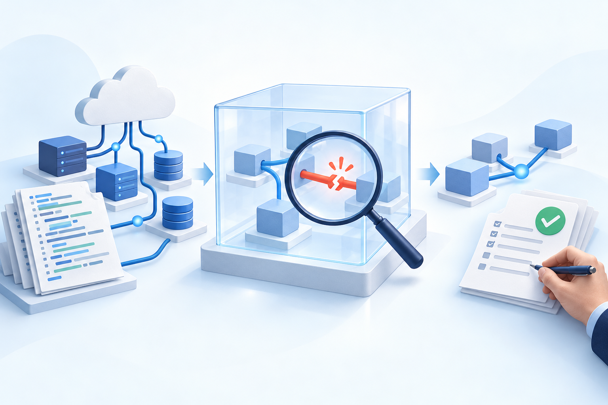

AWS Continuum「見つけた」から、
「確かめて、直す」へ。
AWS Continuum for code vulnerabilities が一般提供に。警告を増やすだけでなく、コードとAWS環境を手がかりに危険度を見極め、修正案をレビューへつなぐサービスです。[1]

警告一覧の先まで、つなげる
中心になるのは「危ない記述があるか」だけでなく、「この環境では、どこまで被害につながるか」という視点。AWS構成の情報を加えて、対応の順番を考えます。[1]
「検証済み」にも、根拠の種類がある
導入前に確認したい条件
- コードの入力元
- GitHub連携、またはAmazon S3。S3はContinuumを有効化する同一AWSアカウント・リージョンのバケットと、アクセス用IAMロールが必要です。[1]
- AWS環境の情報
- collectorによる追加は任意。利用するとAWSリソースやネットワーク構成を判断材料にできます。[1]
- 提供リージョン
- 米国東部（バージニア北部）／米国西部（オレゴン）。GA記事に東京リージョンの記載はありません。[1]
- 料金の仕組み
- 保護するコード行数に応じた月額コンテキスト料金＋推論従量料金。最初の1,000万行は100万行あたり月200米ドル、推論は1 CIU（Continuum inference unit）あたり10米ドル。コード量が増えるとコンテキスト料金は段階的に下がります。1件の脆弱性＝1 CIUという固定換算ではなく、処理内容で使用量が変わります。[4]
- 無料枠への注意
- 料金ページの「2か月・月400 task-hours」は別機能のpenetration testing用。今回のcode vulnerabilitiesの無料枠とは扱えません。[4]
- 未確認の範囲
- 対応言語一覧、リポジトリ上限、依存関係の解析範囲、IaC対象一覧は今回の調査では確認できていません。言語や構成に依存する採用判断は、導入前に最新仕様の確認が必要です。
InspectorやCodex Securityとは何が違う？
Amazon Inspector
SAST（ソースコード解析）、SCA（依存ライブラリ解析）、IaC（インフラ定義解析）をすでに提供。GitHub・GitLabにも対応しています。Continuumは発見後の検証・環境に応じた優先付け・修正を一連の流れにする点が特徴です。Inspectorを全面置換するという意味ではありません。[5][2]
CodeGuru
CodeGuru SecurityはSAST系ですが、2025年11月20日のサポート終了が告知済み。CodeGuru Reviewerも2025年11月7日から新規リポジトリ関連付けができません。新規導入の比較では、この提供状況に注意が必要です。[6][7]
Codex Security
GitHubのコードと脅威モデルを使い、検証とレビュー可能な修正を目指す点は近い方向性。ContinuumはAWS構成をcollectorから取り込む点が明確です。共通条件での精度・価格比較を確認しておらず、どちらが優秀とは断定できません。[8][1]
Continuumの修正対象に依存更新・設定変更があることと、既存SAST/SCA/IaC製品と同じ検出範囲を保証することは別です。
個人開発なら、どこに使う？
以下は製品仕様から考えた利用例・判断の目安で、実測した導入効果ではありません。
AWS上のAPIや認証サービス
コードだけでは見えにくい公開範囲やデータへの経路を合わせて確認したいときに検討候補。導入前にコード量と推論使用量の予算を見積もり、限定した評価で証拠の納得感を確認する進め方が考えられます。
AWS外のアプリや小規模ツール
GitHubをつなぐだけで追加価値が十分か、既存のコード監査と何が違うかを先に確認。AWS環境情報による利点が小さいケースでは、導入を急ぐ根拠はありません。
公式資料と確認範囲
原文の全文翻訳ではなく、公式情報をもとにした独自の日本語要約です。料金・利用条件・提供状況は変更されるため、導入時には最新の公式資料を確認してください。
- AWS News Blog：一般提供の詳細（2026年10月22日）
- AWS What's New：GA発表
- AWS Security Blog：Continuumの紹介
- AWS Continuum：料金
- Amazon Inspector：ドキュメント概要 ／ SAST・SCA・IaCの公式API定義
- CodeGuru Security：公式CLIリファレンスの終了告知
- CodeGuru Reviewer：利用可能範囲の変更
- OpenAI：Codex Security
GA記事からリンクされたUser Guide本文は今回取得できず、対応言語などの詳細は未確認として残しています。